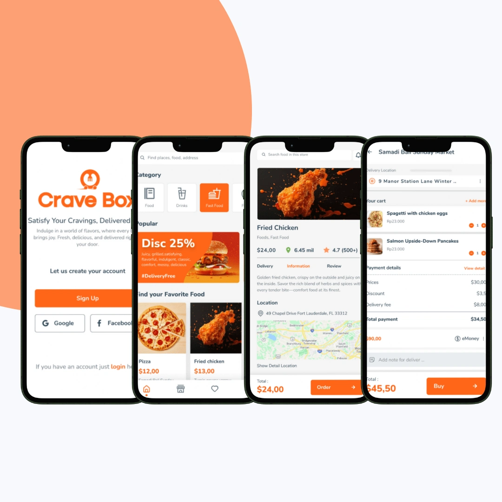
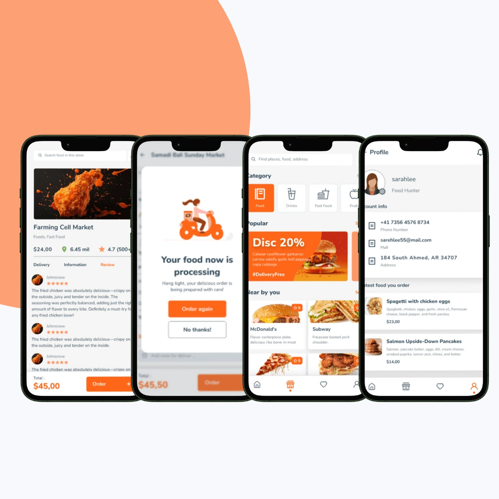

A food delivery app rebuilt around fewer taps from craving to checkout.
CraveBox is a modern food delivery app connecting users to local restaurants. I redesigned the full user journey with a UI/UX system focused on clarity, personalization, and speed, delivering a clutter-free, mobile-optimised ordering experience.

The brief: make ordering feel effortless
CraveBox is a modern food delivery app that connects users to their favorite local restaurants. The goal was a clutter-free, mobile-optimised experience that makes food discovery and ordering quick, enjoyable, and tailored to each person. I took on the UI/UX design, rebuilding the complete user journey around three priorities: clarity, personalization, and speed.
Early research shaped every decision. Users wanted fewer steps from browsing to checkout, leaned heavily on strong visuals when choosing food, valued the ability to reorder past meals, and responded well to personalization.

A user-centered design system
The approach balanced performance with aesthetics. Minimalist layouts, high-impact food visuals, simplified order flows, personalized sections, and subtle microinteractions work together to reduce decision fatigue and keep the experience smooth across devices. The work moved through discovery and planning, information architecture, visual design, personalized UX, prototype testing, and final delivery, with Figma and Miro driving the design and wireframing.
The handoff was built for engineering. Deliverables included fully annotated UI components, a style guide covering typography, color, and spacing, light and dark mode design tokens, and design QA support through development.